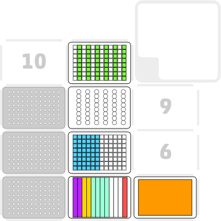

Lesley Ives
11 March 2024
OP_PD_003 v1.0
Plasmid Purification of 48 Samples Using the Machery Nagel Strip Kit
Description
This protocol carries out DNA extraction of 48 samples using the NucleoSpin 8 Plasmid CORE Kit.
Labware and Liquids

- Left mount: An 8-channel p300 pipette (GEN2)
- Slot 1, 4 and 7: 300µl Tip Racks
- Slot 2: Twelve channel reservoir containing the NucleoSpin reagents
- Slot 3: Deep well reservoir containing A4 wash buffer
- Slot 5: 96 deep well plate containing 48 colony pellets
- Slot 8: 96 deep well block containing the tube strips and tube strip holder
- Slot 11: 96 deep well block
Execution
- Set up the deck as described above and as in the initial protocol pause step
- Run the protocol
- The protocol contains pauses and manual steps to centrifuge the sample plate and empty the waste box
Script
Plasmid Purification of 48 Samples Using the Machery Nagel Strip Kit
Tips and best practices
Carry out a test run of the protocol using the labware and water to ensure that the positioning of labware and tips is suitable. Re-calibration of the deck or labware may be required.
Following each centrifugation step ensure that all liquid has transferred through the column. If any liquid remains in the columns carry out the centrifugation step again.